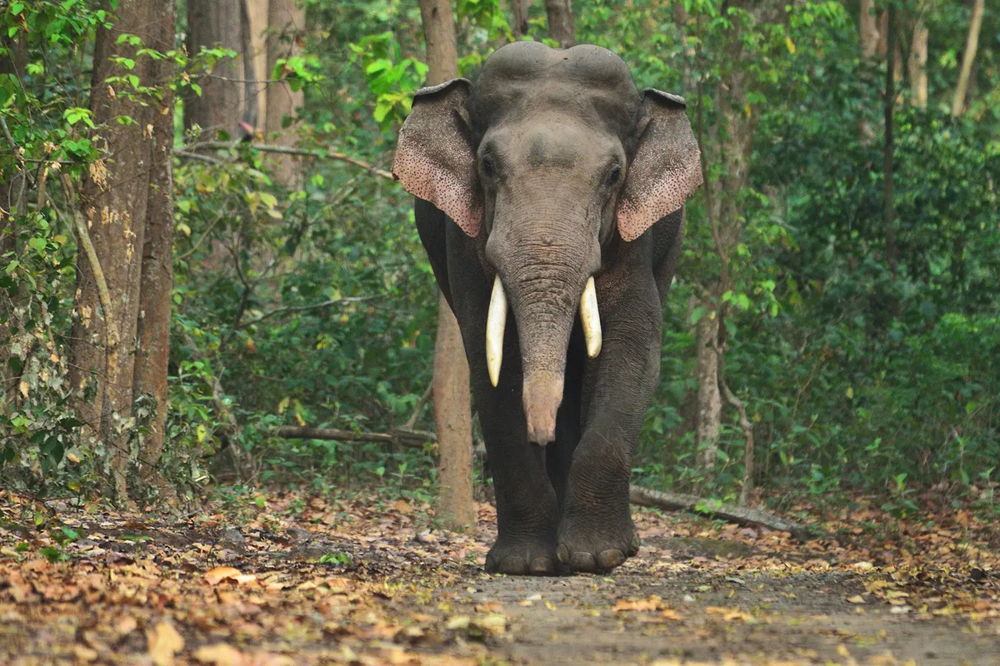
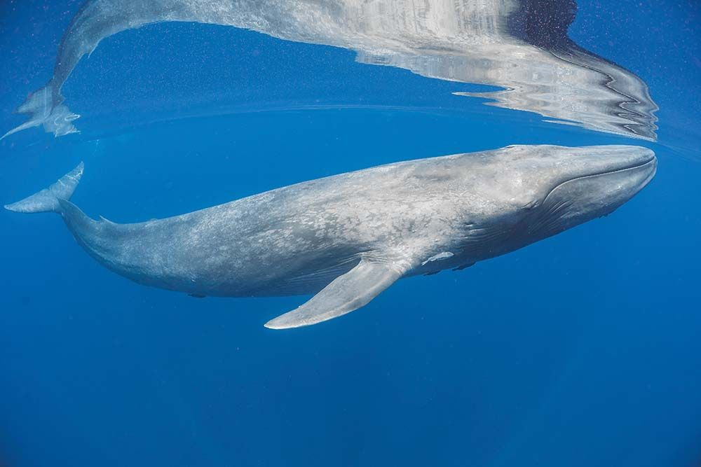
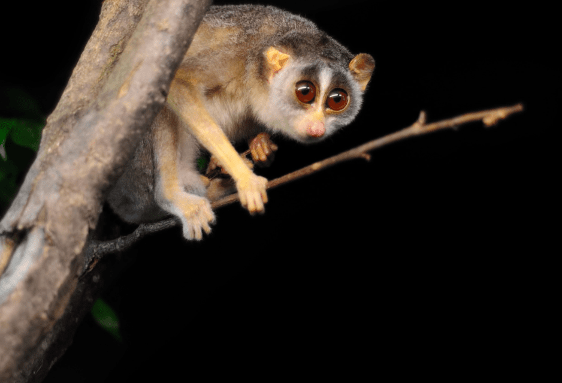
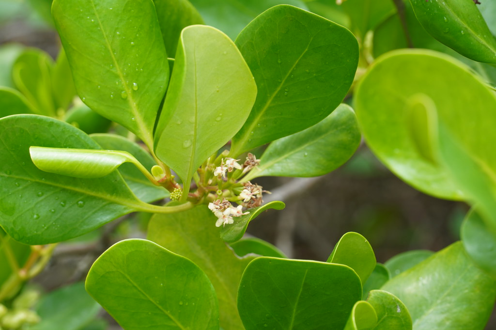

Endangered Species
Sri Lanka is the home to both migratory and endemic species. The high
diversity of ecosystems and biodiversity has provided habitats for
plethora of wildlife. Many species are facing the threat of extinction
due to habitat loss,
human impact
and climatic changes. This content page shows the mostly endangered
flora and fauna in Sri Lanka.
Asian elephant (Elephas Maximus)

The Asian elephant is the largest mammal living on the land in Asian
content. According to International Union for Conservation of Nature Red
List Asian elephant categorized as endangered. Asian elephants provide
numerous facilities for the ecosystem. They create pathways through the
forests enabling travel for many species. Asian elephants produce 100
kilograms of dung daily giving adequate compost for plant diversity and
food for insects who feed upon elephant dung. Due to human elephant
conflict Makes them critically endangered.
Blue whale (Balaenoptera musculus)

Blue whale is mammal who acts a critical role in marine ecosystem
preventing imbalance of the food web making it stable and maintains the
ocean ecosystem. They play an important role in capturing carbon dioxide
in the atmosphere, making Carbon dioxide on average. Blue whales fight
against climatic changes which will guide to critical environmental
problems if they are extinct. Increasing plastic pollution, human made
ocean echoes, waste and fuel remove by ships threaten the blue whale
population.
Red slender Loris (Loris Tardigradus)

It is a small and a nocturnal native in rainforests and scrubs in Sri
Lanka. The life span of red slender Loris is approximately 15 years. It
is mostly insectivorous eating insects in fields helping farmers to
protect the harvest. So, their major benefit to ecosystem is preventing
population of harmful insects. Also helping the balance of food chain by
being the prey of snakes and eagles. Thet are endangered with habitat
loss, pet trade and hunting.
Ceylon Oak (Scyphiphora hydrophyllace)

This plant commonly found in mangrove forests, wetlands and coastal
habitats in Sri Lanka. The extensive root system helps to prevent soil
erosion, maintaining clean water and supporting ecosystems in mangrove
habitats. This plant provides food and shelter for small mammals, birds
and insects. When flooding and natural disasters happen, it has a high
tolerance to protect land. Different parts of this tree are used for
medical treatments. Scyphiphora hydrophyllace endangered due to habitat
loss deforestation and coastal urbanization. It is essential to restore
natural habitat for Scyphiphora hydrophyllace ensuring its survival for
the balance of ecosystems.
Leatherback turtle

Leatherback turtle is critically endangered which is rare to find in Sri
Lanka. They got their name because of the rough, thin and rubbery skin.
It is the largest turtle in the world. They are the only type of marine
turtle which has no scales and a hard shell. Female leatherback turtle
lay 100 eggs at one time. They feed on algae, squid and jellyfish.
Leatherback turtle supports controlling the jellyfish population in
ocean. The eggs of this turtle are stolen every year and sold in the
black market. Natural disasters such as floods, storms and tsunamis also
cause destruction for these turtles. Biggest human threats are
leatherback turtles are killing. Due to plastic and chemical waste also
with pet trade they tend to extinct soon from the nature.